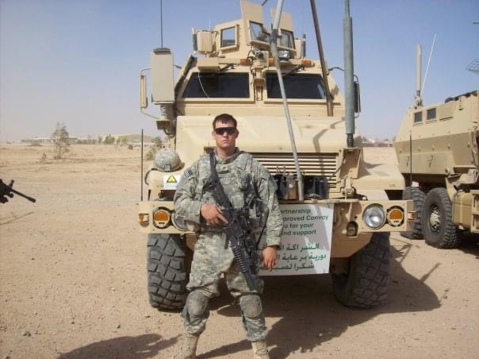

I was born and raised in Baltimore, Maryland. As a young child, I enjoyed going crabbing and fishing with my father and grandfather in the Chesapeake Bay. I was active throughout my school years and played a variety of sports including baseball, wrestling, and track and field. I was fortunate to grow up with a large and supportive family that loved hosting family cookouts and holiday parties.
At 20 years old I joined the United States Army. I completed various schools in the military including Reconnaissance Surveillance Leaders Course (RSLC), Airborne, Air Assault, and Advanced Life Support (ALS) as well as a trip to the National Training Center as light infantry. I deployed for the first time to Baghdad, Iraq in 2007 for 15 months with a Reconnaissance Surveillance Targeted Acquisition (RSTA) company. We carried out traditional infantry COIN operations while utilizing our long-range reconnaissance skillset to work in small four-man teams remotely for up to a week if needed. When I returned to the US I stayed in the same platoon but was now in charge of a 6-8 man team. I deployed for the second time to Iraq in 2009 for approximately 8 months before honorably discharging. After my time in the Army, I got a job with the CSX railroad as a freight conductor/RCO operator in Baltimore, Maryland.
When I turned 30 I moved to Northern Virginia and left CSX Railroad in order to go to school to become an Emergency Medical Technician. I attended a local community college and completed the coursework and test to obtain my EMT. However, shortly after I completed the coursework, I was given an opportunity to pursue a career as an elevator mechanic with the local union and decided to take that opportunity. After getting married, my wife and I moved back to Maryland for her job and I was unable to transfer to the local union. After the birth of my son, I spent his first year at home and am now pursuing a career as a programmer.

I graduated from Dundalk High School in 2002. I attended Northern Virginia Community College from approximately 2015-2016 pursuing the coursework required to become an Emergency Medical Technician, which I accomplished in 2016. In 2022 I attended SkillStorm’s VETTEC Accelerated Immersive Java-J2EE Certification Program, which I am estimated to complete in January 2023.